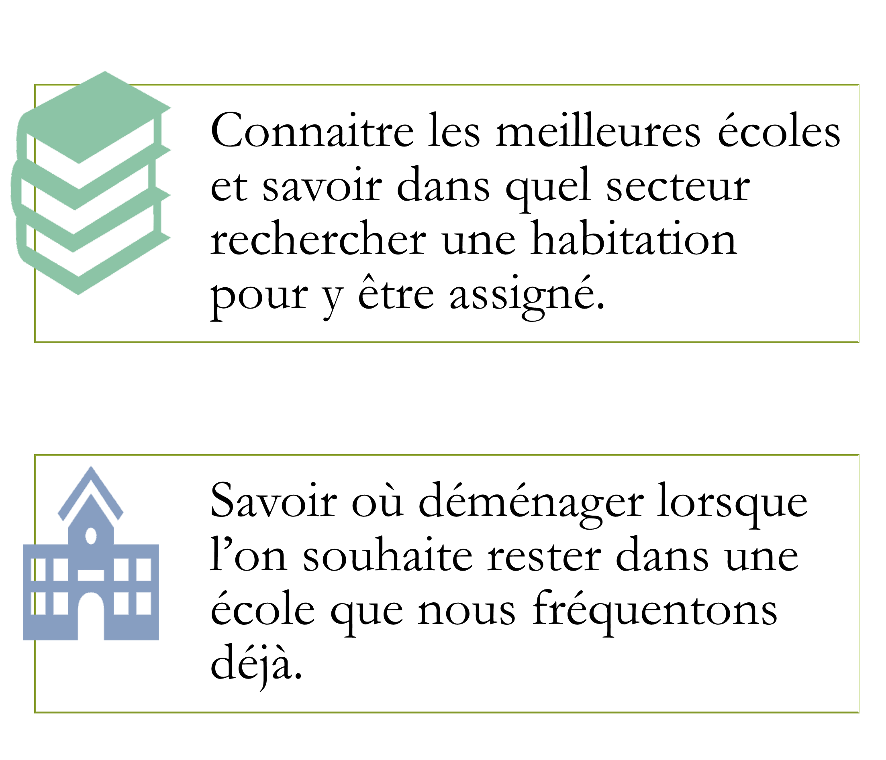

Ce travail est produit dans le cadre d'un projet scolaire de fin de programme de DEC en Géomatique au Cegep
Limoilou.
Les scores affichés sont la moyenne des évaluations faites par les utilisateurs du site ayant fréquenté l'école.

Proposer une solution pour :

Les données sources qui ont permis la réalisation ont été téléchargées :
Les bassins de desserte représentent les zones d'habitation pour lesquelles l'école est concidéré comme l'école d'attribution par défaut.
Ils ne représentent pas forcément la réalité car nous ne disposons pas de la démographie au foyer prêt qui aurait pu permettre un meilleur calcul.
Ce sont des représentations théoriques, néanmoins ils respectent la délimitation de la commission scolaire.
Les écoles sont réélles mais ont été épuré afin de ne garder qu'un seul point par école. D'autre part seules les écoles primaires proposant un enseignement en français ont été concervées.